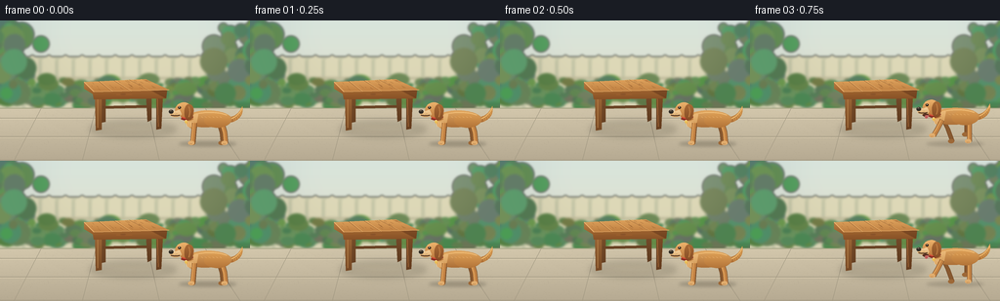
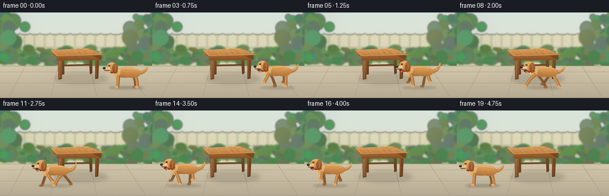

CODING AGENTS AS PIXEL WORLD MODELS
traex/GPT-6.1-Sol · dynamic_spatial_relationship_0002
点击播放 · 原生 RGB 像素
逐轮保存的候选
回放视频、检查图与代码变化。
每份候选均可单独播放。实际图片检查记录在下方工具轨迹中。
候选 01播放与检查图
点击播放 · 原生 RGB 像素


展开代码变化
--- 上一保存版本
+++ 本次保存版本
@@ -0,0 +1,206 @@
+from pathlib import Path
+import math
+import numpy as np
+from PIL import Image, ImageDraw, ImageFilter
+from artifact_io import save
+
+ROOT=Path(__file__).resolve().parent
+W,H,S=256,144,4
+rng=np.random.default_rng(41)
+
+def layer(): return Image.new('RGBA',(W*S,H*S),(0,0,0,0))
+def poly(im,p,c): ImageDraw.Draw(im).polygon([(round(x*S),round(y*S)) for x,y in p],fill=c)
+def ellipse(im,box,c): ImageDraw.Draw(im).ellipse(tuple(round(v*S) for v in box),fill=c)
+def line(im,p,c,w=1): ImageDraw.Draw(im).line([(round(x*S),round(y*S)) for x,y in p],fill=c,width=max(1,round(w*S)),joint='curve')
+def bezier(points,n=40):
+ p=np.asarray(points,float); out=[]
+ for t in np.linspace(0,1,n):
+ q=p.copy()
+ for j in range(len(p)-1,0,-1): q[:j]=(1-t)*q[:j]+t*q[1:j+1]
+ out.append(tuple(q[0]))
+ return out
+
+def shape(im,pts,top,bottom):
+ mask=Image.new('L',im.size,0); ImageDraw.Draw(mask).polygon([(round(x*S),round(y*S)) for x,y in pts],fill=255)
+ ymin=min(y for x,y in pts)*S; ymax=max(y for x,y in pts)*S
+ t=np.clip((np.arange(H*S)-ymin)/max(1,ymax-ymin),0,1)[:,None,None]
+ a=np.array(top)[None,None,:]*(1-t)+np.array(bottom)[None,None,:]*t
+ a=np.broadcast_to(a,(H*S,W*S,3)).astype('uint8')
+ fill=Image.fromarray(a).convert('RGBA'); im.alpha_composite(Image.composite(fill,layer(),mask))
+
+def oval(im,b,top,bottom):
+ x0,y0,x1,y1=b
+ pts=[((x0+x1)/2+(x1-x0)/2*math.cos(a),(y0+y1)/2+(y1-y0)/2*math.sin(a)) for a in np.linspace(0,2*math.pi,100)]
+ shape(im,pts,top,bottom)
+
+# A soft-focus sunlit garden. All textures are procedural.
+bg=layer()
+y=np.linspace(0,1,H*S)[:,None,None]
+a=np.broadcast_to(np.array([213,227,221])[None,None,:]*(1-y)+np.array([229,217,191])[None,None,:]*y,(H*S,W*S,3)).astype('uint8')
+bg=Image.fromarray(a).convert('RGBA')
+garden=layer()
+# distant cream-colored garden fence
+poly(garden,[(0,37),(256,37),(256,91),(0,91)],(194,195,165,255))
+for x in range(-8,263,17):
+ poly(garden,[(x,40),(x+7,35),(x+14,40),(x+14,90),(x,90)],(218,213,181,255))
+ line(garden,[(x+14,41),(x+14,89)],(171,177,149,255),.8)
+line(garden,[(0,59),(256,59)],(190,185,154,255),3)
+# gently layered leafy bushes
+for j in range(185):
+ x=float(rng.uniform(-14,273)); yy=float(rng.uniform(60,87)); r=float(rng.uniform(3,12))
+ c=(int(rng.integers(71,113)),int(rng.integers(110,148)),int(rng.integers(64,97)),255)
+ ellipse(garden,(x-r,yy-r*.65,x+r,yy+r*.65),c)
+for side in [0,256]:
+ for j in range(65):
+ x=side+float(rng.normal(0,18)); yy=float(rng.uniform(6,75)); r=float(rng.uniform(4,14))
+ c=(int(rng.integers(75,124)),int(rng.integers(118,160)),int(rng.integers(77,113)),255)
+ ellipse(garden,(x-r,yy-r,x+r,yy+r),c)
+garden=garden.filter(ImageFilter.GaussianBlur(1.2*S)); bg.alpha_composite(garden)
+# paved terrace
+shape(bg,[(0,90),(256,90),(256,144),(0,144)],(211,199,172),(182,170,146))
+line(bg,[(0,90),(256,90)],(176,174,141,255),1)
+for yy in [100,119,143]:
+ line(bg,[(0,yy),(256,yy+.3)],(155,147,125,100),.65)
+ line(bg,[(0,yy+1),(256,yy+1.3)],(233,219,189,100),.5)
+for pts in [[(42,90),(14,144)],[(98,90),(84,144)],[(151,90),(163,144)],[(210,90),(246,144)]]:
+ line(bg,pts,(160,151,129,110),.6)
+# small texture in stone
+texture=layer()
+for j in range(2900):
+ x=float(rng.uniform(0,256)); yy=float(rng.uniform(92,144)); r=float(rng.uniform(.06,.3))
+ ellipse(texture,(x-r,yy-r,x+r,yy+r),(122,115,95,int(rng.integers(8,24))))
+bg.alpha_composite(texture)
+# garden light, subtle warm veil
+light=layer(); ellipse(light,(29,-56,247,95),(255,248,206,19)); light=light.filter(ImageFilter.GaussianBlur(18*S)); bg.alpha_composite(light)
+# Table shadow is attached to the paving, and remains still.
+sh=layer(); ellipse(sh,(91,103,181,120),(56,53,37,46)); ellipse(sh,(104,108,168,115),(57,49,33,28)); sh=sh.filter(ImageFilter.GaussianBlur(3*S)); bg.alpha_composite(sh)
+# four legs, far ones first
+shape(bg,[(102,69),(108,69),(108,104),(103,105)],(127,82,44),(102,64,34))
+shape(bg,[(149,69),(155,68),(155,102),(151,104)],(125,82,47),(94,59,31))
+line(bg,[(105,89),(151,88)],(106,68,37,255),3)
+shape(bg,[(97,74),(104,74),(104,112),(98,113)],(159,105,56),(117,72,36))
+shape(bg,[(160,73),(167,72),(165,111),(160,112)],(126,78,40),(100,60,30))
+line(bg,[(100,77),(100,110)],(181,128,73,255),.7)
+line(bg,[(161,77),(162,109)],(164,104,55,255),.65)
+# front apron and side apron
+shape(bg,[(94,70),(169,70),(169,80),(96,81)],(161,101,49),(135,81,38))
+shape(bg,[(149,62),(171,72),(170,80),(151,70)],(139,85,42),(112,65,31))
+# solid rectangular tabletop in perspective
+shape(bg,[(86,63),(149,60),(173,71),(96,76),(86,70)],(194,133,72),(149,92,42))
+shape(bg,[(86,63),(149,60),(173,71),(96,73)],(223,164,94),(190,126,64))
+line(bg,[(86,63),(96,73),(173,71)],(234,176,109,255),.65)
+# plank joins and timber grain
+for f in [.24,.49,.74]:
+ a=(86+(149-86)*f,63-3*f); b=(96+(173-96)*f,73-2*f)
+ line(bg,[a,b],(139,88,44,255),.55)
+ line(bg,[(a[0]+.6,a[1]),(b[0]+.6,b[1])],(243,184,111,255),.4)
+for j in range(29):
+ f=float(rng.uniform(.01,.99)); t=float(rng.uniform(.03,.78)); length=float(rng.uniform(.05,.22))
+ def pt(t): return (86+63*f+(10+14*f)*t,63-3*f+(10+f)*t)
+ p0=pt(t); p1=pt(min(.97,t+length))
+ line(bg,[p0,p1],(147,94,48,100),.3)
+# subtle knots on the front wooden apron
+ellipse(bg,(123,75.1,129,76.6),(130,78,39,100)); line(bg,[(119,76),(135,76)],(180,112,54,90),.3)
+
+# The dog is drawn in local coordinates. Cubic outlines, shaded volumes and
+# articulated paws keep its identity constant throughout the run.
+def dog(im,x,ground,phase,running):
+ amp=1.0 if running else 0.0
+ lift=2.7*(.5+.5*math.cos(phase*2)) if running else 0
+ gy=ground-lift
+ def P(p): return [(x+a,gy+b) for a,b in p]
+ def L(p,c,w): line(im,P(p),c,w)
+ def E(b,c): ellipse(im,(x+b[0],gy+b[1],x+b[2],gy+b[3]),c)
+ def O(b,t,bottom): oval(im,(x+b[0],gy+b[1],x+b[2],gy+b[3]),t,bottom)
+ def Q(p,t,b): shape(im,P(p),t,b)
+ # contact shadow broadens and lightens during airborne phases
+ shadow=layer(); ellipse(shadow,(x-30,ground-1,x+29,ground+4),(50,45,31,64 if not running else 47)); shadow=shadow.filter(ImageFilter.GaussianBlur(1.6*S)); im.alpha_composite(shadow)
+ # legs, with two-segment stride anatomy
+ def leg(root,theta,far=False,front=False):
+ rx,ry=root
+ if running:
+ swing=math.sin(theta)
+ knee=(rx+9*swing,ry+10-2*max(0,-swing))
+ foot=(rx+17*swing,2-7*max(0,-math.cos(theta)))
+ else:
+ knee=(rx+(-1 if front else 3),ry+10)
+ foot=(rx+(-2 if front else 4),1)
+ pts=[root,knee,foot]
+ col=(136,89,48,255) if far else (194,129,67,255)
+ L(pts,(111,70,36,255),5.1 if not far else 4.3)
+ L(pts,col,4.2 if not far else 3.6)
+ if not far: L([(root[0]-1,root[1]),(knee[0]-1,knee[1]),(foot[0]-1,foot[1]-1)],(223,164,93,255),1.1)
+ E((foot[0]-4.5,foot[1]-2.5,foot[0]+1.9,foot[1]+1.7),(157,104,55,255) if far else (225,173,110,255))
+ if not far:
+ L([(foot[0]-2.6,foot[1]+.2),(foot[0]-2.6,foot[1]+1.1)],(155,105,58,255),.45)
+ L([(foot[0]-.9,foot[1]+.2),(foot[0]-.9,foot[1]+1.1)],(155,105,58,255),.45)
+ leg((11,-20),phase+math.pi,True)
+ leg((-13,-21),phase+.6,True,True)
+ # uplifted feathered tail, wagging slightly
+ wag=1.7*math.sin(phase*.6) if running else .7*math.sin(phase)
+ tail=bezier([(17,-26),(28,-25),(32,-31-wag),(35,-37-wag)])+bezier([(35,-37-wag),(37,-28),(31,-21),(20,-20)])
+ Q(tail,(222,164,89),(172,109,51))
+ L(bezier([(23,-24),(31,-27),(35,-35-wag)]),(241,190,116,255),1.1)
+ for j in range(5): L([(26+j*1.6,-25-j*1.5),(27+j*1.6,-21-j*1.8)],(226,166,88,255),.6)
+ # near hind leg attaches into rounded haunch
+ leg((14,-20),phase,False)
+ # torso smoothly shaped from shoulders to rump
+ body=bezier([(-19,-29),(-9,-35),(19,-34),(24,-25)])+bezier([(24,-25),(25,-18),(15,-14),(6,-16)])+bezier([(6,-16),(-5,-15),(-15,-15),(-20,-20)])+bezier([(-20,-20),(-22,-24),(-22,-27),(-19,-29)])
+ Q(body,(226,168,97),(172,111,55))
+ O((-4,-30,23,-15),(220,158,85),(179,116,56))
+ L(bezier([(-14,-29),(-1,-32),(12,-31),(19,-28)]),(239,188,118,255),1.1)
+ # longer fur below the chest
+ chest=bezier([(-18,-28),(-27,-24),(-23,-16),(-15,-13)])+[( -12,-18),(-10,-29)]
+ Q(chest,(234,185,121),(202,144,77))
+ for j in range(4): L([(-22+j*2,-21),(-21+j*2,-16+j*.3)],(246,201,140,255),.8)
+ leg((-14,-20),phase+math.pi+.55,False,True)
+ # neck taper, rich red collar with gold round tag
+ neck=bezier([(-18,-30),(-18,-37),(-27,-37),(-29,-29)])+bezier([(-29,-29),(-27,-21),(-19,-21),(-15,-24)])
+ Q(neck,(222,166,96),(179,112,54))
+ L(bezier([(-27,-25),(-23,-23),(-19,-24),(-16,-27)]),(139,47,35,255),3.1)
+ L(bezier([(-27,-26),(-23,-24),(-19,-25),(-16,-28)]),(220,80,56,255),1.0)
+ E((-24,-23,-21,-19.5),(233,189,87,255)); E((-23.5,-23,-22,-22),(255,231,149,255))
+ # head and brow
+ head=bezier([(-31,-39),(-23,-44),(-16,-39),(-18,-32)])+bezier([(-18,-32),(-19,-25),(-25,-25),(-30,-28)])+bezier([(-30,-28),(-35,-30),(-35,-35),(-31,-39)])
+ Q(head,(237,179,108),(192,126,65))
+ # dropped silky ear on visible side
+ ear=bezier([(-21,-39),(-16,-40),(-13,-35),(-16,-26)])+bezier([(-16,-26),(-17,-21),(-24,-23),(-24,-28)])+bezier([(-24,-28),(-25,-32),(-24,-37),(-21,-39)])
+ Q(ear,(169,107,54),(134,78,38))
+ L(bezier([(-20,-37),(-18,-32),(-19,-28),(-20,-26)]),(193,128,68,255),1)
+ # pale muzzle, open smiling jaw and nose
+ muzzle=bezier([(-31,-33),(-34,-31),(-40,-33),(-39,-28)])+bezier([(-39,-28),(-36,-25),(-29,-25),(-27,-29)])+[( -29,-33)]
+ Q(muzzle,(245,209,157),(216,167,104))
+ L(bezier([(-38,-28),(-33,-27),(-29,-28)]),(81,52,35,255),1.0)
+ if running:
+ E((-34,-26.9,-27.5,-23.8),(87,48,33,255))
+ tongue=bezier([(-31,-25),(-33,-20.6),(-28,-21),(-28,-25)])
+ Q(tongue,(221,117,116),(189,87,88))
+ L([(-30,-24.7),(-30,-22.8)],(160,68,72,255),.4)
+ O((-40.2,-33.5,-35.5,-29.5),(66,57,48),(37,35,31))
+ E((-39.1,-33.1,-37.5,-32.2),(132,122,103,255))
+ # clear glossy brown eye, with a cream brow highlight
+ E((-31,-37,-27.7,-34.4),(108,67,34,255))
+ E((-30.4,-36.8,-28,-34.5),(35,30,24,255))
+ E((-29.9,-36.5,-29.05,-35.7),(255,241,210,255))
+ L([(-31,-38),(-28,-38.3)],(246,198,130,255),.8)
+ # fine face markings, fur without noisy speckles
+ L([(-33,-29.5),(-31.5,-29.2)],(180,131,76,255),.35)
+ L([(-34,-28.5),(-32.5,-28.3)],(180,131,76,255),.35)
+ for j in range(6):
+ xx=-7+j*3.8
+ L([(xx,-26.6),(xx+1.6,-25.6)],(233,177,107,155),.45)
+
+frames=[]
+for i in range(20):
+ t=np.clip((i-2)/14,0,1)
+ # ease into motion and settle again; most of the transit is a steady run
+ travel=t*t*(3-2*t)
+ x=213-169*travel
+ running=2<i<17
+ phase=(i-3)*1.42 if running else i*.28
+ im=bg.copy()
+ dog(im,x,125,phase,running)
+ # downsample from analytic 4x drawing for clean cinematic edges
+ arr=np.asarray(im.convert('RGB').resize((W,H),Image.Resampling.LANCZOS)).copy()
+ frames.append(arr)
+save(np.stack(frames),ROOT)
可观测工具轨迹
实际执行的命令与返回图片。
命令 1exit 0
/bin/bash -lc 'ls -la; cat prompt.txt; cat GENERATION_RULES.md; cat task_spec.json'
命令 2exit 0
/bin/bash -lc "cat artifact_io.py; python - <<'PY'
import PIL,numpy
print('PIL',PIL.__version__)
PY"命令 3exit 0
/bin/bash -lc "cat > generate.py <<'PY'
from pathlib import Path
import math
import numpy as np
from PIL import Image, ImageDraw, ImageFilter
from artifact_io import save
ROOT=Path(__file__).resolve().parent
W,H,S=256,144,4
rng=np.random.default_rng(41)
def layer(): return Image.new('RGBA',(W*S,H*S),(0,0,0,0))
def poly(im,p,c): ImageDraw.Draw(im).polygon([(round(x*S),round(y*S)) for x,y in p],fill=c)
def ellipse(im,box,c): ImageDraw.Draw(im).ellipse(tuple(round(v*S) for v in box),fill=c)
def line(im,p,c,w=1): ImageDraw.Draw(im).line([(round(x*S),round(y*S)) for x,y in p],fill=c,width=max(1,round(w*S)),joint='curve')
def bezier(points,n=40):
p=np.asarray(points,float); out=[]
for t in np.linspace(0,1,n):
q=p.copy()
for j in range(len(p)-1,0,-1): q[:j]=(1-t)*q[:j]+t*q[1:j+1]
out.append(tuple(q[0]))
return out
def shape(im,pts,top,bottom):
mask=Image.new('L',im.size,0); ImageDraw.Draw(mask).polygon([(round(x*S),round(y*S)) for x,y in pts],fill=255)
ymin=min(y for x,y in pts)*S; ymax=max(y for x,y in pts)*S
t=np.clip((np.arange(H*S)-ymin)/max(1,ymax-ymin),0,1)[:,None,None]
a=np.array(top)[None,None,:]*(1-t)+np.array(bottom)[None,None,:]*t
a=np.broadcast_to(a,(H*S,W*S,3)).astype('uint8')
fill=Image.fromarray(a).convert('RGBA'); im.alpha_composite(Image.composite(fill,layer(),mask))
def oval(im,b,top,bottom):
x0,y0,x1,y1=b
pts=[((x0+x1)/2+(x1-x0)/2*math.cos(a),(y0+y1)/2+(y1-y0)/2*math.sin(a)) for a in np.linspace(0,2*math.pi,100)]
shape(im,pts,top,bottom)
# A soft-focus sunlit garden. All textures are procedural.
bg=layer()
y=np.linspace(0,1,H*S)[:,None,None]
a=np.broadcast_to(np.array([213,227,221])[None,None,:]*(1-y)+np.array([229,217,191])[None,None,:]*y,(H*S,W*S,3)).astype('uint8')
bg=Image.fromarray(a).convert('RGBA')
garden=layer()
# distant cream-colored garden fence
poly(garden,[(0,37),(256,37),(256,91),(0,91)],(194,195,165,255))
for x in range(-8,263,17):
poly(garden,[(x,40),(x+7,35),(x+14,40),(x+14,90),(x,90)],(218,213,181,255))
line(garden,[(x+14,41),(x+14,89)],(171,177,149,255),.8)
line(garden,[(0,59),(256,59)],(190,185,154,255),3)
# gently layered leafy bushes
for j in range(185):
x=float(rng.uniform(-14,273)); yy=float(rng.uniform(60,87)); r=float(rng.uniform(3,12))
c=(int(rng.integers(71,113)),int(rng.integers(110,148)),int(rng.integers(64,97)),255)
ellipse(garden,(x-r,yy-r*.65,x+r,yy+r*.65),c)
for side in [0,256]:
for j in range(65):
x=side+float(rng.normal(0,18)); yy=float(rng.uniform(6,75)); r=float(rng.uniform(4,14))
c=(int(rng.integers(75,124)),int(rng.integers(118,160)),int(rng.integers(77,113)),255)
ellipse(garden,(x-r,yy-r,x+r,yy+r),c)
garden=garden.filter(ImageFilter.GaussianBlur(1.2*S)); bg.alpha_composite(garden)
# paved terrace
shape(bg,[(0,90),(256,90),(256,144),(0,144)],(211,199,172),(182,170,146))
line(bg,[(0,90),(256,90)],(176,174,141,255),1)
for yy in [100,119,143]:
line(bg,[(0,yy),(256,yy+.3)],(155,147,125,100),.65)
line(bg,[(0,yy+1),(256,yy+1.3)],(233,219,189,100),.5)
for pts in [[(42,90),(14,144)],[(98,90),(84,144)],[(151,90),(163,144)],[(210,90),(246,144)]]:
line(bg,pts,(160,151,129,110),.6)
# small texture in stone
texture=layer()
for j in range(2900):
x=float(rng.uniform(0,256)); yy=float(rng.uniform(92,144)); r=float(rng.uniform(.06,.3))
ellipse(texture,(x-r,yy-r,x+r,yy+r),(122,115,95,int(rng.integers(8,24))))
bg.alpha_composite(texture)
# garden light, subtle warm veil
light=layer(); ellipse(light,(29,-56,247,95),(255,248,206,19)); light=light.filter(ImageFilter.GaussianBlur(18*S)); bg.alpha_composite(light)
# Table shadow is attached to the paving, and remains still.
sh=layer(); ellipse(sh,(91,103,181,120),(56,53,37,46)); ellipse(sh,(104,108,168,115),(57,49,33,28)); sh=sh.filter(ImageFilter.GaussianBlur(3*S)); bg.alpha_composite(sh)
# four legs, far ones first
shape(bg,[(102,69),(108,69),(108,104),(103,105)],(127,82,44),(102,64,34))
shape(bg,[(149,69),(155,68),(155,102),(151,104)],(125,82,47),(94,59,31))
line(bg,[(105,89),(151,88)],(106,68,37,255),3)
shape(bg,[(97,74),(104,74),(104,112),(98,113)],(159,105,56),(117,72,36))
shape(bg,[(160,73),(167,72),(165,111),(160,112)],(126,78,40),(100,60,30))
line(bg,[(100,77),(100,110)],(181,128,73,255),.7)
line(bg,[(161,77),(162,109)],(164,104,55,255),.65)
# front apron and side apron
shape(bg,[(94,70),(169,70),(169,80),(96,81)],(161,101,49),(135,81,38))
shape(bg,[(149,62),(171,72),(170,80),(151,70)],(139,85,42),(112,65,31))
# solid rectangular tabletop in perspective
shape(bg,[(86,63),(149,60),(173,71),(96,76),(86,70)],(194,133,72),(149,92,42))
shape(bg,[(86,63),(149,60),(173,71),(96,73)],(223,164,94),(190,126,64))
line(bg,[(86,63),(96,73),(173,71)],(234,176,109,255),.65)
# plank joins and timber grain
for f in [.24,.49,.74]:
a=(86+(149-86)*f,63-3*f); b=(96+(173-96)*f,73-2*f)
line(bg,[a,b],(139,88,44,255),.55)
line(bg,[(a[0]+.6,a[1]),(b[0]+.6,b[1])],(243,184,111,255),.4)
for j in range(29):
f=float(rng.uniform(.01,.99)); t=float(rng.uniform(.03,.78)); length=float(rng.uniform(.05,.22))
def pt(t): return (86+63*f+(10+14*f)*t,63-3*f+(10+f)*t)
p0=pt(t); p1=pt(min(.97,t+length))
line(bg,[p0,p1],(147,94,48,100),.3)
# subtle knots on the front wooden apron
ellipse(bg,(123,75.1,129,76.6),(130,78,39,100)); line(bg,[(119,76),(135,76)],(180,112,54,90),.3)
# The dog is drawn in local coordinates. Cubic outlines, shaded volumes and
# articulated paws keep its identity constant throughout the run.
def dog(im,x,ground,phase,running):
amp=1.0 if running else 0.0
lift=2.7*(.5+.5*math.cos(phase*2)) if running else 0
gy=ground-lift
def P(p): return [(x+a,gy+b) for a,b in p]
def L(p,c,w): line(im,P(p),c,w)
def E(b,c): ellipse(im,(x+b[0],gy+b[1],x+b[2],gy+b[3]),c)
def O(b,t,bottom): oval(im,(x+b[0],gy+b[1],x+b[2],gy+b[3]),t,bottom)
def Q(p,t,b): shape(im,P(p),t,b)
# contact shadow broadens and lightens during airborne phases
shadow=layer(); ellipse(shadow,(x-30,ground-1,x+29,ground+4),(50,45,31,64 if not running else 47)); shadow=shadow.filter(ImageFilter.GaussianBlur(1.6*S)); im.alpha_composite(shadow)
# legs, with two-segment stride anatomy
def leg(root,theta,far=False,front=False):
rx,ry=root
if running:
swing=math.sin(theta)
knee=(rx+9*swing,ry+10-2*max(0,-swing))
foot=(rx+17*swing,2-7*max(0,-math.cos(theta)))
else:
knee=(rx+(-1 if front else 3),ry+10)
foot=(rx+(-2 if front else 4),1)
pts=[root,knee,foot]
col=(136,89,48,255) if far else (194,129,67,255)
L(pts,(111,70,36,255),5.1 if not far else 4.3)
L(pts,col,4.2 if not far else 3.6)
if not far: L([(root[0]-1,root[1]),(knee[0]-1,knee[1]),(foot[0]-1,foot[1]-1)],(223,164,93,255),1.1)
E((foot[0]-4.5,foot[1]-2.5,foot[0]+1.9,foot[1]+1.7),(157,104,55,255) if far else (225,173,110,255))
if not far:
L([(foot[0]-2.6,foot[1]+.2),(foot[0]-2.6,foot[1]+1.1)],(155,105,58,255),.45)
L([(foot[0]-.9,foot[1]+.2),(foot[0]-.9,foot[1]+1.1)],(155,105,58,255),.45)
leg((11,-20),phase+math.pi,True)
leg((-13,-21),phase+.6,True,True)
# uplifted feathered tail, wagging slightly
wag=1.7*math.sin(phase*.6) if running else .7*math.sin(phase)
tail=bezier([(17,-26),(28,-25),(32,-31-wag),(35,-37-wag)])+bezier([(35,-37-wag),(37,-28),(31,-21),(20,-20)])
Q(tail,(222,164,89),(172,109,51))
L(bezier([(23,-24),(31,-27),(35,-35-wag)]),(241,190,116,255),1.1)
for j in range(5): L([(26+j*1.6,-25-j*1.5),(27+j*1.6,-21-j*1.8)],(226,166,88,255),.6)
# near hind leg attaches into rounded haunch
leg((14,-20),phase,False)
# torso smoothly shaped from shoulders to rump
body=bezier([(-19,-29),(-9,-35),(19,-34),(24,-25)])+bezier([(24,-25),(25,-18),(15,-14),(6,-16)])+bezier([(6,-16),(-5,-15),(-15,-15),(-20,-20)])+bezier([(-20,-20),(-22,-24),(-22,-27),(-19,-29)])
Q(body,(226,168,97),(172,111,55))
O((-4,-30,23,-15),(220,158,85),(179,116,56))
L(bezier([(-14,-29),(-1,-32),(12,-31),(19,-28)]),(239,188,118,255),1.1)
# longer fur below the chest
chest=bezier([(-18,-28),(-27,-24),(-23,-16),(-15,-13)])+[( -12,-18),(-10,-29)]
Q(chest,(234,185,121),(202,144,77))
for j in range(4): L([(-22+j*2,-21),(-21+j*2,-16+j*.3)],(246,201,140,255),.8)
leg((-14,-20),phase+math.pi+.55,False,True)
# neck taper, rich red collar with gold round tag
neck=bezier([(-18,-30),(-18,-37),(-27,-37),(-29,-29)])+bezier([(-29,-29),(-27,-21),(-19,-21),(-15,-24)])
Q(neck,(222,166,96),(179,112,54))
L(bezier([(-27,-25),(-23,-23),(-19,-24),(-16,-27)]),(139,47,35,255),3.1)
L(bezier([(-27,-26),(-23,-24),(-19,-25),(-16,-28)]),(220,80,56,255),1.0)
E((-24,-23,-21,-19.5),(233,189,87,255)); E((-23.5,-23,-22,-22),(255,231,149,255))
# head and brow
head=bezier([(-31,-39),(-23,-44),(-16,-39),(-18,-32)])+bezier([(-18,-32),(-19,-25),(-25,-25),(-30,-28)])+bezier([(-30,-28),(-35,-30),(-35,-35),(-31,-39)])
Q(head,(237,179,108),(192,126,65))
# dropped silky ear on visible side
ear=bezier([(-21,-39),(-16,-40),(-13,-35),(-16,-26)])+bezier([(-16,-26),(-17,-21),(-24,-23),(-24,-28)])+bezier([(-24,-28),(-25,-32),(-24,-37),(-21,-39)])
Q(ear,(169,107,54),(134,78,38))
L(bezier([(-20,-37),(-18,-32),(-19,-28),(-20,-26)]),(193,128,68,255),1)
# pale muzzle, open smiling jaw and nose
muzzle=bezier([(-31,-33),(-34,-31),(-40,-33),(-39,-28)])+bezier([(-39,-28),(-36,-25),(-29,-25),(-27,-29)])+[( -29,-33)]
Q(muzzle,(245,209,157),(216,167,104))
L(bezier([(-38,-28),(-33,-27),(-29,-28)]),(81,52,35,255),1.0)
if running:
E((-34,-26.9,-27.5,-23.8),(87,48,33,255))
tongue=bezier([(-31,-25),(-33,-20.6),(-28,-21),(-28,-25)])
Q(tongue,(221,117,116),(189,87,88))
L([(-30,-24.7),(-30,-22.8)],(160,68,72,255),.4)
O((-40.2,-33.5,-35.5,-29.5),(66,57,48),(37,35,31))
E((-39.1,-33.1,-37.5,-32.2),(132,122,103,255))
# clear glossy brown eye, with a cream brow highlight
E((-31,-37,-27.7,-34.4),(108,67,34,255))
E((-30.4,-36.8,-28,-34.5),(35,30,24,255))
E((-29.9,-36.5,-29.05,-35.7),(255,241,210,255))
L([(-31,-38),(-28,-38.3)],(246,198,130,255),.8)
# fine face markings, fur without noisy speckles
L([(-33,-29.5),(-31.5,-29.2)],(180,131,76,255),.35)
L([(-34,-28.5),(-32.5,-28.3)],(180,131,76,255),.35)
for j in range(6):
xx=-7+j*3.8
L([(xx,-26.6),(xx+1.6,-25.6)],(233,177,107,155),.45)
frames=[]
for i in range(20):
t=np.clip((i-2)/14,0,1)
# ease into motion and settle again; most of the transit is a steady run
travel=t*t*(3-2*t)
x=213-169*travel
running=2<i<17
phase=(i-3)*1.42 if running else i*.28
im=bg.copy()
dog(im,x,125,phase,running)
# downsample from analytic 4x drawing for clean cinematic edges
arr=np.asarray(im.convert('RGB').resize((W,H),Image.Resampling.LANCZOS)).copy()
frames.append(arr)
save(np.stack(frames),ROOT)
PY
python generate.py"命令 4exit 0
/bin/bash -lc "python - <<'PY'
from pathlib import Path
import numpy as np
p=np.load('pixels.npz')['pixels']
assert p.shape==(144,256,20)
assert len(list(Path('frames').glob('*.png')))==20
for name in ['generate.py','pixels.npz','index.html','inspection.png']:
print(name,Path(name).stat().st_size,'bytes')
PY"视觉工具实际返回图片 1

保存候选 1 份；完成命令 4 次；可验证图片返回 1 张。原始 API 响应与完整日志保留在本地。